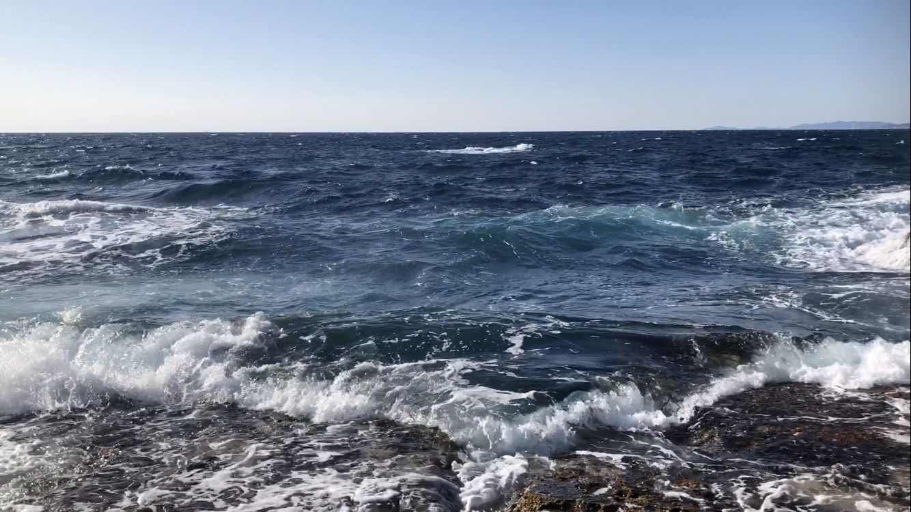

NAOKI OKUDA
Portal

van der Waals equation of state
van der Waals equationの解釈
還元方程式 the law of corresponding state
van der Waals eqの統計力学的導出
自由エネルギー
Maxwell constructionによる相転移
臨界点、critical point
平均場、mean field
Landau理論
古典理論(相転移)
熱力学
安定性理論
How did I make this page?
step1. html・cssを学ぶ
step2. サーバーを用意する